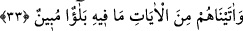

oğullarının peygamberleri gibi olan âlimleri onların peygamberlerinden çok daha
fazladır. Bu durum şöyle îzâh edilebilir: Bu ümmet döneminde kıyâmete kadar dünyâ
hiçbir zaman yüz yirmi dört bin velîden hâlî kalmayacaktır. Yani her devirde yüz yirmi
dört bin velî bulunacaktır. Eski ümmetlerle bu ümmet arasındaki nice farklar var, sen bir
nazar et! Allah bizlere ve sizlere hidâyet eylesin!
el-Müfredât kitabında şöyle denilmektedir: İhtiyar etmek, seçmek, üstün kılmak; işi
hayırlı olanı taleb etmek demektir. Allah Teâlâ’nın “Andolsun biz, onları bir bilgiye
göre âlemlere üstün kıldık” ifâdesi, onlar üzerinde hayır yarattığına ve onları
başkalarına tercih ve takdim ettiğine işârettir.
Bahru’l-‘ulûm’da şöyle denilmektedir: Bu tercih ve üstünlük İsrâil oğullarında Allah
Teâlâ’nın seçip peygamber olarak gönderdiği kimselere mahsustur. Yahut genel olarak
bütün İsrâil oğullarını kapsamakla berâber, ayrıca Hz. Mûsâ (a.s.) ile beraber olanlara
mahsus bir durumdur ki, Allah Teâlâ diğerleri arasından onları seçmiş ve üstün
kılmıştır. Kâşifî şöyle demiştir: “Doğrusu Mûsâ’yı ve İsrâil oğullarının mü’minlerini
seçkin kıldık.” Yani, biz kitabı, peygamberliği ve saltanatı onlara verdik.
33. Onlara, içinde açık bir sınav bulunan âyetler verdik.
“Onlara”, nasıl davranacaklarına bakmak için “içinde” büyük nimet yahut “açık bir
sınav bulunan” denizin yarılması, bulutun onları özel olarak gölgelendirmesi, kudret
helvası ve bıldırcın etinin indirilmesi ve başkalarında hiç benzeri görülmemiş daha nice
büyük mûcizeler ve “âyetler verdik.” “kudret nişânesi olarak”
Keşfü’l-esrâr’da şöyle denmiştir: Allah Teâlâ onlara hem bolluk ve nîmet, hem de
belâ ve sıkıntı vererek onları sınayıp onlardan bolluk zamanında şükür, belâ zamanında
ise sabır göstermelerini istemiştir.İnsan bazen belâ okuyla yaralanır, bazen lutuf ve
ihsâna boğulur. Hak Teâlâ (c.c) rahatlık zamanında şükür, belâ ve sıkıntı zamanında ise
sabır ister. Hz. Mustafa (s.a.) Ensâr’dan bir kısım insanla karşılaştığında onlara
“Mü’min misiniz?” diye sordu, onlar da “Evet, mü’miniz” diye cevap verdiler. Hz.
Peygamber “Îmânınızın alâmeti nedir?” diye sordu, şöyle cevap verdiler; “Nîmete
şükredip mihnete sabrediyoruz ve Allah’ın kazâsına rızâ gösteriyoruz.”
İbnü’ş-Şeyh şöyle demiştir: Hakîkat şudur ki, tercih bakımından belâ kelimesi, mecâz
olarak nimet için de, mihnet için de kullanılır. Çünkü bu iki mânâdan herhangi birini
seçmeyi gerektirecek sebep ve yollar bulunabilir. Şâyet zikredilen âyetlerde geçen belâ
kelimesi bizâtihî nîmet mânâsında olduğu zaman, “…içinde açık bir sınav bulunan
âyetler…” ne demek olur, dersen; ben de cevâben derim ki, burada fî kelimesi
tecrîdiyyedir. Nîmet üstüne nîmet, mihnet üstüne mihnet olduğu gibi, bazen nîmet içinde
nîmet de olabilir.